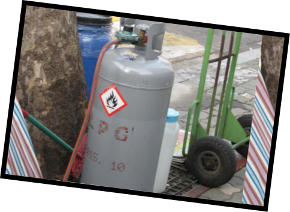
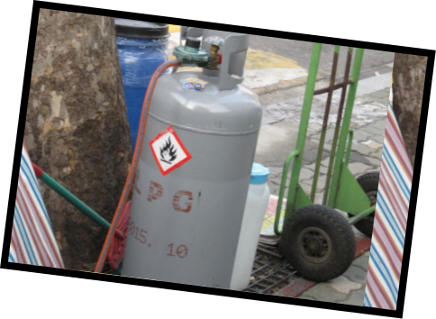
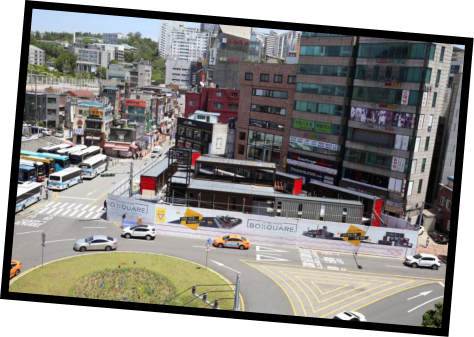
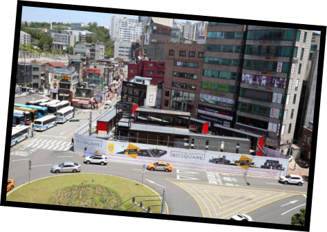
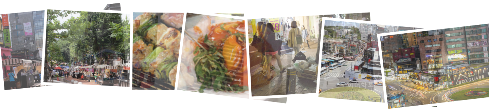
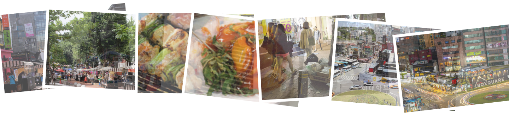

이대 상권의 어제와 오늘
1980년대부터 현재까지 이대 상권의 변화
By 류성경, 허가솔
그 시절 멋쟁이들은
이대 앞으로 모였다


2. 1970년 이대 앞 골목 (출저 : 이화역사관)
3. 1966년 학생들의 모습 (출저 : 이대학보)
‘세상에서 하나밖에 없는 내 옷’을 가지려는 당대의 멋쟁이들이
모두 이대 앞 양장점으로 몰렸다.
양장점 같은 곳에서 옷을 맞췄어요.” (이윤희 교수)
잡지사나 방송국에서도 멋쟁이들의 사진을 찍거나
길거리 캐스팅을 위해 몰려들었다.
멋쟁이들은 모두 이대 앞으로 온다는 인식 때문에
많은 미용실이 생겼다.
「은하 미용실」처럼 유명한 미용실에 많이 갔어요.
요즘에는 유명한 미용실들이 강남으로 많이 넘어가서
많이 없어졌어요.” (이윤희 교수)

2, 3. 1983년 김연우 미용실 앞


2. 2000년대 중남미옷을 파는 가게 (출저 : TN 뉴스)
3. 2000년대 교복을 입고 쇼핑하는 학생들 (출저 : TN 뉴스)
직장인과 중고등학생도 이대 상권으로 모였다.
저가부터 고가까지 선택의 폭이 다양했고,
옷가게 뿐만 아니라 가죽공방, 악세사리 등
재미있는 가게가 많았다.
그 당시 이대는 젊은 여성들의 패션의 중심지였다.
인디 디자이너들의 옷을 구매하는 것이 매력있었어요.
2000년대 초까지 미국에서 들어왔을 때
이대 상권에서 옷을 구매했어요.” (손아정 교수)
상업화가 가속화됐다. 특색이 없어지자 상권이 무너지고
멋쟁이들은 이대를 찾지 않게 되었다.
상업화되어 저렴하게 느껴지는 공간이 많아
사람들이 찾지 않게 되자 상권이 무너지는 결과를 낳은 것 같아요.”
(차지은 교수)


교수님의 입장에서 보는
멋쟁이들을 다시 돌아오게 하기 위해서는?
손아정 교수
“임대료를 낮춰서 실력 있는 인디 디자이너들이 들어올 수 있도록 해야 할 것 같아요.”
“예전에는 수제 신발 거리가 있었는데 그런 ‘identity’가
없어졌어요.
아직도 이대 상권에는 가능성이 있다고 생각해요.
비건, 티(tea), 자연주의적 아이템들을 특성화하면 좋을 것
같아요.
이런 것들을 특성화하는 것이 대한민국에서는 쉽지 않을 것
같아요.”
이윤희 교수
건축학과
최희정 교수
“관광객을 유치하도록 노력해야 해요.
그리고 임대료를 낮춰
젊은 창업가들에게 기회를 주면 좋을 것 같아요.”
“시대가 바뀌어 오프라인 상점은 많이 사라지는 추세라 상권을
살리리는데 어려움이 많을 것 같아요.
문화 공간이 결합된 타입으로 개발되거나 특색있는 제품으로
승부를 봐야 할 것 같아요.
또한 관광객 유치도 적극적으로 해야 할 것 같습니다.”
건축학과
박지현 교수
차지은 교수
“중국 관광객들을 대상으로 하는 상권이 생겨난 것이 상권이 죽은
원인 중에 하나라고 생각해요.
학생들이 주로 이용할 수 있는 시설들이 많이 생겨야 할 것
같아요.”
포장마차들은 다
어디로 갔을까

(출처 : 두산백과)
2. 2009년 이화여대길 (2)
(출처 : 두산백과)
포장마차는 서서 먹어야 하는 불편함도 있었지만
먹는 시간을 절약할 수 있고 가격이 저렴하며
기호에 따라 골라먹을 수 있어서 인기만점이었다.
지하철역에서 내리자마자 포장마차가 많아서 놀랐어요.
먹거리보다는 악세사리류가 많았어요.”(이윤희 교수)
밤에는 떡볶이가 학생들에게 가장 인기있었어요.
그리고 칵테일을 파는 포장마차도 잠깐 있었어요.”
(박지현 교수)
(이윤희 교수)
저도 가장 자주 이용했어요.” (차지은 교수)

2. 2010년대 닭꼬치 포장마차의 닭꼬치 (출저 : 현대)
3. 2010년대 깻잎 떡볶이 포장마차 (출저 : 현대)
4. 2010년대 깻잎 떡볶이 포장마차의 떡볶이 (출저 : 현대)
 


(출저 : 이대학보)
2. LPG 가스통 (출저 : 박스퀘어 홈페이지)
3. 2014년 이화여대길 쓰레기 (2)
(출저 : 이대학보)
끊임없이 민원을 제기했다. 문제는 그 뿐만이 아니었다.
음식 조리에 따른 위생을 보장하기 어려주며
LPG 가스통은 실로 위험했다.
불법 노점상이지만 그렇다고 오랜 역사를 가진 포장마차를
쉽게 철거할 수는 없었다.
노점상을 위한 공간을 만들기로 했다.
신촌 기차역 앞 쉼터였던 공간을
노점상들이 영업할 수 있는 공간으로 만들고
모두 입점할 수 있도록 돕는 것이다.
 


2. 박스퀘어 예상도 (출저 : 박스퀘어 홈페이지)
3. 박스퀘어 야경 (출저 : 박스퀘어 홈페이지)
카페를 가는 목적이
변하다


2. 2000년대 중남미옷을 파는 가게 (출저 : TN 뉴스)
3. 2000년대 교복을 입고 쇼핑하는 학생들 (출저 : TN 뉴스)
동아리방을 대신했다.
특히 이대 앞 카페는 이대 학생들이
여성운동을 이끌어 나갈 때 토론의 장이 됐다.
연락 수단이 귀했던 때 학교 근처 명소는 게시판 역할을 했다.
요즘으로 치면 SNS의 아날로그 버전인 셈이다.
삐삐가 나오기 전 「그린하우스」 옆에 메모판이 있었는데,
타 대학 친구들이 오면 내가 어디에 있다는 걸
그 메모판에 적어놨었어요.”(이윤희 교수)
2. 2013년 라리 내부 (출저 : 블로그 ‘댄저씨 일상’)
그 당시 미팅은 카페에서 커피와 함께였다.
미팅과 소개팅의 장소였어요” (박지현 교수)


 

우리가 일상적으로 보던 학교 앞 상권은 이러한 변화의 결과였다.
이대 상권의 찬란한 과거를 되찾기 위해 우리는 관심을 가지고 기록하고 알려야 할 것이다.
박지현 교수님, 손아정 교수님, 이윤희 교수님, 차지은 교수님, 최희정 교수님
[단행본]
김진, 《이대앞 골목산책》, 서대문구, 2018